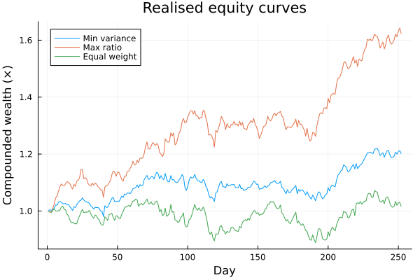

The source files can be found in examples/.
Performance attribution and post-optimisation diagnostics
An optimiser hands you weights; it does not tell you whether the resulting book is any good. Before trusting an allocation you analyse its realised behaviour: how wealth would have grown, how deep and how long the drawdowns were, where the risk actually sits, and how much trading costs eat into the result. None of these are objectives — they are diagnostics you run after optimise, and they work on any weight vector, not just optimiser output (a benchmark, a live book, an equal-weight sleeve).
Where the plotting and reporting page is a visual tour, this one is the quantitative companion: the raw functions that return the numbers and series behind the plots, so you can tabulate, compare, and attribute.
cumulative_returns— the equity curve, simple (sum) or compounded (product).drawdowns— the peak-to-trough path, from which max drawdown, average drawdown, and the Ulcer index follow.calc_net_returnsandcalc_fees— realised returns and cost drag after fees, so you can attribute how much performance the trading costs consumed.risk_contribution— where the portfolio's risk comes from, by asset.
Reach for these after you have chosen a portfolio, to understand and compare candidates on realised path behaviour, risk concentration, and cost drag — rather than re-optimising. Because they take a plain weight vector, they are equally the tools for reporting on a benchmark or an externally-supplied book.
using PortfolioOptimisers, PrettyTables, DataFrames, Statisticsresfmt = (v, i, j) -> begin if j == 1 return v else return isa(v, Number) ? "$(round(v * 100, digits = 3)) %" : v endend;1. Candidate books
We build three portfolios to compare: a minimum-variance and a maximum-ratio book from MeanRisk, plus a naive equal-weight sleeve. The equal-weight book is just a vector — it shows that every diagnostic below works on any weights, not only optimiser results.
using CSV, TimeSeries, ClarabelX = TimeArray(CSV.File(joinpath(@__DIR__, "..", "SP500.csv.gz")); timestamp = :Date)[(end - 252):end]rd = prices_to_returns(X)pr = prior(EmpiricalPrior(), rd)rf = 4.2 / 100 / 252slv = Solver(; name = :clarabel, solver = Clarabel.Optimizer, settings = Dict("verbose" => false), check_sol = (; allow_local = true, allow_almost = true))w_min = optimise(MeanRisk(; obj = MinimumRisk(), opt = JuMPOptimiser(; pe = pr, slv = slv))).ww_ratio = optimise(MeanRisk(; obj = MaximumRatio(; rf = rf), opt = JuMPOptimiser(; pe = pr, slv = slv))).ww_ew = fill(inv(length(rd.nx)), length(rd.nx))books = ["Min variance" => w_min, "Max ratio" => w_ratio, "Equal weight" => w_ew]# Realised in-sample portfolio return series for each book.port_ret = [name => rd.X * w for (name, w) in books]3-element Vector{Pair{String, Vector{Float64}}}:
"Min variance" => [0.002681322622346128, 0.0010718963591286419, -0.001091427248523568, 0.004544617536041753, 0.0033640670294393937, 0.010241746052437292, -0.000533407571480784, 0.010636902007923447, 0.0020214817396458275, -0.0020684143227996995 … 0.0016026835814608247, -0.013295284199451581, -0.008357208547582817, 0.0014778555240846426, 0.0036899176302634487, 0.011666675299059045, -0.0059562046400169, 0.007175142095468344, 0.0033377454197510933, -0.008845799550049448]
"Max ratio" => [-0.001773540323256267, -0.0003663495800997497, -0.002042024455486297, 0.015047999836559708, 0.014001426877989352, 0.020249124903598932, 0.007577814646386208, 0.015092279238492042, 0.01498739416929806, 0.00870691096785053 … 0.0057017097986279425, -0.014619597724759237, -0.0049742470254680645, 0.0029772392002589344, 0.006541120023316685, 0.01279433941695305, -0.00609059966693776, 0.012667870030001699, 0.006264546445565505, -0.011709263471352094]
"Equal weight" => [-7.529306018216425e-5, -0.003943468929117339, -0.0006168910061063867, 0.007922868362850667, 0.003838630271063305, -0.006818932318424335, -0.0008574365354448269, 0.0019159331199488528, 0.0021821709705080175, 0.010325853772815433 … -0.005087357906633911, -0.016669830954238365, -0.011165675086790852, -0.002661627163363915, 0.0037911760758185063, 0.016771917527164497, -0.013691693040682826, 0.008952068707920178, 0.000985996386706416, -0.01290498726972443]2. Cumulative returns: the equity curve
cumulative_returns turns a return series into a wealth path. Its compound flag picks the convention:
compound = false(the default) sums the returns:cumsum(X)— the absolute cumulative return, additive and easy to reason about for short horizons.compound = truemultiplies them:cumprod(1 .+ X)— the relative (geometric) wealth multiple, which is what an investor actually realises through reinvestment.
The dedicated absolute_cumulative_returns and relative_cumulative_returns expose the two conventions directly. We report each book's final compounded wealth multiple.
final_wealth = [name => cumulative_returns(r, true)[end] for (name, r) in port_ret]pretty_table(DataFrame(; book = first.(final_wealth), Symbol("compounded wealth (×)") => [round(last(p); digits = 4) for p in final_wealth]); title = "Final compounded wealth multiple over the sample")Final compounded wealth multiple over the sample
┌──────────────┬───────────────────────┐
│ book │ compounded wealth (×) │
│ String │ Float64 │
├──────────────┼───────────────────────┤
│ Min variance │ 1.2015 │
│ Max ratio │ 1.6234 │
│ Equal weight │ 1.0166 │
└──────────────┴───────────────────────┘3. Drawdown analytics
drawdowns returns the full peak-to-trough series (each point is the loss from the running high). From it we derive the three headline drawdown statistics: the maximum drawdown (worst single decline), the average drawdown (time-average depth), and the Ulcer index (root-mean-square depth, which punishes long drawdowns more than shallow spikes). We compute compounded drawdowns to match the geometric equity curve.
dd_stats = map(port_ret) do (name, r) dd = drawdowns(r, true) # compounded drawdown series, ≤ 0 return (name = name, max_dd = -minimum(dd), avg_dd = -mean(dd), ulcer = sqrt(mean(dd .^ 2)))endpretty_table(DataFrame(dd_stats); formatters = [resfmt], title = "Drawdown analytics") Drawdown analytics
┌──────────────┬──────────┬─────────┬─────────┐
│ name │ max_dd │ avg_dd │ ulcer │
│ String │ Float64 │ Float64 │ Float64 │
├──────────────┼──────────┼─────────┼─────────┤
│ Min variance │ 9.027 % │ 2.749 % │ 3.621 % │
│ Max ratio │ 9.537 % │ 2.132 % │ 3.013 % │
│ Equal weight │ 14.712 % │ 5.118 % │ 6.369 % │
└──────────────┴──────────┴─────────┴─────────┘4. A realised-performance scorecard
Putting the path statistics together gives the kind of scorecard you would report for a book: annualised return and volatility, the annualised Sharpe ratio (net of the risk-free rate), the maximum drawdown, and the Calmar ratio (annualised return over maximum drawdown). All are derived from the realised return series — no re-optimisation.
scorecard = map(port_ret) do (name, r) ann_ret = mean(r) * 252 ann_vol = std(r) * sqrt(252) sharpe = (mean(r) - rf) / std(r) * sqrt(252) max_dd = -minimum(drawdowns(r, true)) return (book = name, ann_return = ann_ret, ann_vol = ann_vol, sharpe = sharpe, max_drawdown = max_dd, calmar = ann_ret / max_dd)endpretty_table(DataFrame(scorecard); formatters = [(v, i, j) -> (if j in (2, 3, 5) "$(round(v*100, digits=2)) %" elseif isa(v, Number) round(v; digits = 3) else v end)], title = "Realised-performance scorecard") Realised-performance scorecard
┌──────────────┬────────────┬─────────┬─────────┬──────────────┬─────────┐
│ book │ ann_return │ ann_vol │ sharpe │ max_drawdown │ calmar │
│ String │ Float64 │ Float64 │ Float64 │ Float64 │ Float64 │
├──────────────┼────────────┼─────────┼─────────┼──────────────┼─────────┤
│ Min variance │ 19.46 % │ 14.83 % │ 1.028 │ 9.03 % │ 2.155 │
│ Max ratio │ 50.35 % │ 19.31 % │ 2.39 │ 9.54 % │ 5.28 │
│ Equal weight │ 3.71 % │ 20.36 % │ -0.024 │ 14.71 % │ 0.252 │
└──────────────┴────────────┴─────────┴─────────┴──────────────┴─────────┘5. Cost attribution: gross vs net returns
A book that looks good gross can be mediocre net of trading costs. calc_net_returns applies a Fees schedule to the realised returns; calc_fees reports the cost of holding the weights for a single period.
The important subtlety is the time base: calc_net_returns(w, X, fees) deducts the fee on every row of X — it models paying the rebalancing cost each period. So with 252 daily observations a per-period fee of l accumulates to roughly 252 · l over the year before compounding. We therefore use a modest per-rebalance fee of 5 bps (l = 0.0005), which is about a 12–13% annualised cost, and compare gross and net compounded wealth.
fees = Fees(; l = 0.0005)gross_ret = rd.X * w_rationet_ret = calc_net_returns(w_ratio, rd.X, fees)single_period_fee = calc_fees(w_ratio, fees)pretty_table(DataFrame(; quantity = ["Gross compounded wealth (×)", "Net compounded wealth (×)", "Single-period fee (fraction)", "Approx annualised fee (252 periods)"], value = [round(cumulative_returns(gross_ret, true)[end]; digits = 4), round(cumulative_returns(net_ret, true)[end]; digits = 4), round(single_period_fee; digits = 5), round(252 * single_period_fee; digits = 4)]); title = "Fee drag on the maximum-ratio book (5 bps per rebalance)")Fee drag on the maximum-ratio book (5 bps per rebalance)
┌─────────────────────────────────────┬─────────┐
│ quantity │ value │
│ String │ Float64 │
├─────────────────────────────────────┼─────────┤
│ Gross compounded wealth (×) │ 1.6234 │
│ Net compounded wealth (×) │ 1.4315 │
│ Single-period fee (fraction) │ 0.0005 │
│ Approx annualised fee (252 periods) │ 0.126 │
└─────────────────────────────────────┴─────────┘6. Risk attribution
A book can look diversified by weight yet be concentrated in risk. risk_contribution decomposes the total risk into per-asset shares. As with the plotting layer, a quadratic risk measure must be configured for the data — pass factory(Variance(), pr), not a bare Variance(). We normalise the contributions so they sum to one and report the largest for the minimum-variance book.
rc = risk_contribution(factory(Variance(), pr), w_min, rd.X)rc ./= sum(rc)rc_df = sort(DataFrame(; asset = rd.nx, weight = w_min, risk_share = rc), :risk_share; rev = true)pretty_table(first(rc_df, 8); formatters = [resfmt], title = "Top risk contributors — minimum-variance book")Top risk contributors — minimum-variance book
┌────────┬──────────┬────────────┐
│ asset │ weight │ risk_share │
│ String │ Float64 │ Float64 │
├────────┼──────────┼────────────┤
│ JNJ │ 36.974 % │ 36.972 % │
│ MRK │ 17.467 % │ 17.467 % │
│ KO │ 11.161 % │ 11.163 % │
│ WMT │ 9.355 % │ 9.355 % │
│ PEP │ 8.978 % │ 8.978 % │
│ CVX │ 7.432 % │ 7.434 % │
│ XOM │ 4.725 % │ 4.725 % │
│ PG │ 2.353 % │ 2.352 % │
└────────┴──────────┴────────────┘The weight and risk shares are not the same: a low-weight, high-volatility or highly-correlated name can carry a disproportionate share of the risk. That gap is exactly what risk attribution surfaces.
7. The equity curves
Finally, the compounded wealth paths of the three books side by side — the visual summary of everything the scorecard quantified.
using StatsPlots, GraphRecipescurves = [name => cumulative_returns(r, true) for (name, r) in port_ret]plot(cumulative_returns(port_ret[1][2], true); label = first(port_ret[1]), xlabel = "Day", ylabel = "Compounded wealth (×)", title = "Realised equity curves", legend = :topleft)for (name, r) in port_ret[2:end] plot!(cumulative_returns(r, true); label = name)endcurrent()
Summary
After the optimiser runs, the post-processing toolkit answers "how did this book actually behave?" without any re-optimisation:
cumulative_returns(simple/compounded) is the equity curve;drawdownsgives the loss path and the max-drawdown / Ulcer statistics.calc_net_returnsandcalc_feesattribute the cost drag, separating gross from net performance.risk_contributionshows where the risk lives, which weight alone hides.
Every one of these takes a plain weight vector, so the same diagnostics report on optimiser output, a benchmark, or any externally-supplied portfolio.
This page was generated using Literate.jl.